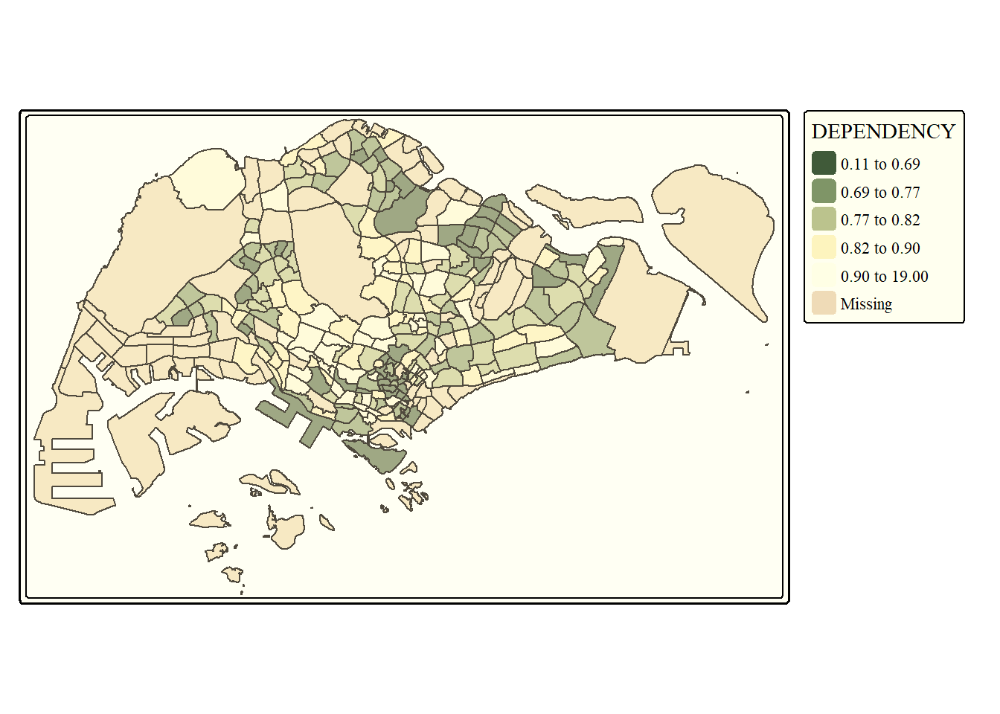
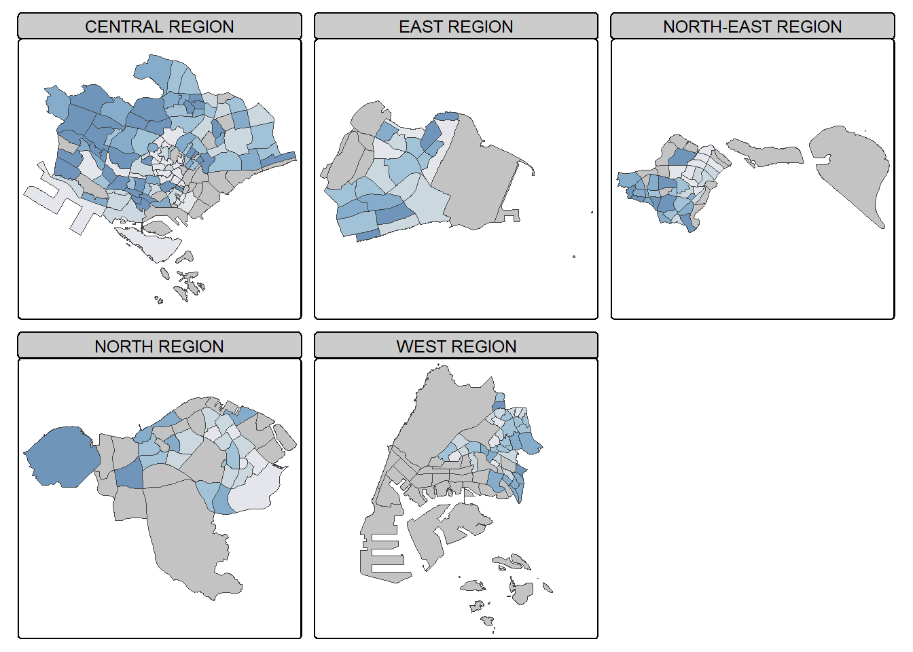

pacman::p_load(sf, tmap, tidyverse)In-class Exercise 8
Choropleth Mapping with R
tmap updated to ver 4
1 Getting Started
1.1 Install and Load R Packages
1.2 Import Geospatial Data
mpsz <- st_read(dsn = "data/geospatial",
layer = "MP14_SUBZONE_WEB_PL")Reading layer `MP14_SUBZONE_WEB_PL' from data source
`C:\brigittatsai\ISSS608_AY2024-25_T2\In-class_Ex\In-class_Ex08\data\geospatial'
using driver `ESRI Shapefile'
Simple feature collection with 323 features and 15 fields
Geometry type: MULTIPOLYGON
Dimension: XY
Bounding box: xmin: 2667.538 ymin: 15748.72 xmax: 56396.44 ymax: 50256.33
Projected CRS: SVY211.3 Importing Attribute Data
popdata <- read_csv("data/aspatial/respopagesextod2011to2020.csv")Rows: 984656 Columns: 7
── Column specification ────────────────────────────────────────────────────────
Delimiter: ","
chr (5): PA, SZ, AG, Sex, TOD
dbl (2): Pop, Time
ℹ Use `spec()` to retrieve the full column specification for this data.
ℹ Specify the column types or set `show_col_types = FALSE` to quiet this message.2 Data Preparation
2.1 Data Wrangling
popdata2020 <- popdata %>%
filter(Time == 2020) %>%
group_by(PA, SZ, AG) %>%
summarise(`POP` = sum(`Pop`)) %>%
ungroup() %>%
pivot_wider(names_from=AG,
values_from=POP) %>%
mutate(YOUNG = rowSums(.[3:6])
+rowSums(.[12])) %>%
mutate(`ECONOMY ACTIVE` = rowSums(.[7:11])+
rowSums(.[13:15]))%>%
mutate(`AGED`=rowSums(.[16:21])) %>%
mutate(`TOTAL`=rowSums(.[3:21])) %>%
mutate(`DEPENDENCY` = (`YOUNG` + `AGED`)
/`ECONOMY ACTIVE`) %>%
select(`PA`, `SZ`, `YOUNG`,
`ECONOMY ACTIVE`, `AGED`,
`TOTAL`, `DEPENDENCY`)`summarise()` has grouped output by 'PA', 'SZ'. You can override using the
`.groups` argument.2.2 Joining Geospatial and Aspatial Data
popdata2020 <- popdata2020 %>%
mutate_at(.vars = vars(PA, SZ),
.funs = funs(toupper)) %>%
filter(`ECONOMY ACTIVE` > 0)Warning: `funs()` was deprecated in dplyr 0.8.0.
ℹ Please use a list of either functions or lambdas:
# Simple named list: list(mean = mean, median = median)
# Auto named with `tibble::lst()`: tibble::lst(mean, median)
# Using lambdas list(~ mean(., trim = .2), ~ median(., na.rm = TRUE))mpsz_pop2020 <- left_join(mpsz, popdata2020,
by = c("SUBZONE_N" = "SZ"))3 Choropleth Mapping using tmap
3.1 qtm()
tmap_mode("plot")ℹ tmap mode set to "plot".qtm(mpsz_pop2020,
fill = "DEPENDENCY")
3.2 tmap’s elements
tm_shape(mpsz_pop2020)+
tm_polygons(fill = "DEPENDENCY",
fill.scale = tm_scale_intervals(
style = "quantile",
n = 5,
values = "brewer.blues"),
fill.legend = tm_legend(
title = "Dependency ratio")) +
tm_title("Distribution of Dependency Ratio by planning subzone") +
tm_layout(frame = TRUE) +
tm_borders(fill_alpha = 0.5) +
tm_compass(type="8star", size = 2) +
tm_grid(alpha =0.2) +
tm_credits("Source: Planning Sub-zone boundary from Urban Redevelopment Authorithy (URA)\n and Population data from Department of Statistics DOS",
position = c("left", "bottom"))[plot mode] fit legend/component: Some legend items or map compoments do not
fit well, and are therefore rescaled.
ℹ Set the tmap option `component.autoscale = FALSE` to disable rescaling.
3.2.1 Drawing a base map
tm_shape(mpsz_pop2020) +
tm_polygons()
3.2.2 Drawing a choropleth map using tm_polygons()
tm_shape(mpsz_pop2020)+
tm_polygons("DEPENDENCY")
3.2.3 Drawing a choropleth map using tm_fill() and tm_border()
tm_shape(mpsz_pop2020)+
tm_fill("DEPENDENCY")
Add the borders using tm_borders()
tm_shape(mpsz_pop2020)+
tm_fill("DEPENDENCY") +
tm_borders(lwd = 0.1, alpha = 1)── tmap v3 code detected ───────────────────────────────────────────────────────[v3->v4] `tm_borders()`: use 'fill' for the fill color of polygons/symbols
(instead of 'col'), and 'col' for the outlines (instead of 'border.col').
[v3->v4] `tm_borders()`: use `fill_alpha` instead of `alpha`.
This message is displayed once every 8 hours.3.3 Data Classification Methods of tmap
3.3.1 Plotting choropleth maps with built-in classification methods
tm_shape(mpsz_pop2020)+
tm_fill("DEPENDENCY",
n = 5,
style = "jenks") +
tm_borders(alpha = 0.5)── tmap v3 code detected ───────────────────────────────────────────────────────[v3->v4] `tm_fill()`: instead of `style = "jenks"`, use fill.scale =
`tm_scale_intervals()`.
ℹ Migrate the argument(s) 'style', 'n' to 'tm_scale_intervals(<HERE>)'
[v3->v4] `tm_borders()`: use `fill_alpha` instead of `alpha`.
tm_shape(mpsz_pop2020)+
tm_fill("DEPENDENCY",
n = 5,
style = "equal") +
tm_borders(alpha = 0.5)── tmap v3 code detected ───────────────────────────────────────────────────────[v3->v4] `tm_fill()`: instead of `style = "equal"`, use fill.scale =
`tm_scale_intervals()`.
ℹ Migrate the argument(s) 'style', 'n' to 'tm_scale_intervals(<HERE>)'
[v3->v4] `tm_borders()`: use `fill_alpha` instead of `alpha`.
3.3.2 Plotting choropleth map with custome break
Before setting break points, it is always good to display and compute the descriptive statistics using the code below.
summary(mpsz_pop2020$DEPENDENCY) Min. 1st Qu. Median Mean 3rd Qu. Max. NA's
0.1111 0.7147 0.7866 0.8585 0.8763 19.0000 92 tm_shape(mpsz_pop2020)+
tm_fill("DEPENDENCY",
breaks = c(0, 0.60, 0.70, 0.80, 0.90, 1.00)) +
tm_borders(alpha = 0.5)── tmap v3 code detected ───────────────────────────────────────────────────────[v3->v4] `tm_tm_fill()`: migrate the argument(s) related to the scale of the
visual variable `fill` namely 'breaks' to fill.scale = tm_scale(<HERE>).
[v3->v4] `tm_borders()`: use `fill_alpha` instead of `alpha`.Warning: Values have found that are higher than the highest break. They are
assigned to the highest interval
3.4 Colour Scheme
3.4.1 ColourBrewer Palette
tm_shape(mpsz_pop2020)+
tm_fill("DEPENDENCY",
n = 6,
style = "quantile",
palette = "Blues") +
tm_borders(alpha = 0.5)── tmap v3 code detected ───────────────────────────────────────────────────────[v3->v4] `tm_fill()`: instead of `style = "quantile"`, use fill.scale =
`tm_scale_intervals()`.
ℹ Migrate the argument(s) 'style', 'n', 'palette' (rename to 'values') to
'tm_scale_intervals(<HERE>)'
[v3->v4] `tm_borders()`: use `fill_alpha` instead of `alpha`.
[cols4all] color palettes: use palettes from the R package cols4all. Run
`cols4all::c4a_gui()` to explore them. The old palette name "Blues" is named
"brewer.blues"
Multiple palettes called "blues" found: "brewer.blues", "matplotlib.blues". The first one, "brewer.blues", is returned.
tm_shape(mpsz_pop2020)+
tm_fill("DEPENDENCY",
style = "quantile",
palette = "-Greens") + # Use '-' to reverse colour shading
tm_borders(alpha = 0.5)── tmap v3 code detected ───────────────────────────────────────────────────────[v3->v4] `tm_fill()`: instead of `style = "quantile"`, use fill.scale =
`tm_scale_intervals()`.
ℹ Migrate the argument(s) 'style', 'palette' (rename to 'values') to
'tm_scale_intervals(<HERE>)'
[v3->v4] `tm_borders()`: use `fill_alpha` instead of `alpha`.
Multiple palettes called "greens" found: "brewer.greens", "matplotlib.greens". The first one, "brewer.greens", is returned.
[cols4all] color palettes: use palettes from the R package cols4all. Run
`cols4all::c4a_gui()` to explore them. The old palette name "-Greens" is named
"greens" (in long format "brewer.greens")
3.5 Map Layouts
3.5.1 Map Legends
tm_shape(mpsz_pop2020)+
tm_fill("DEPENDENCY",
style = "jenks",
palette = "Blues",
legend.hist = TRUE,
legend.is.portrait = TRUE,
legend.hist.z = 0.1) +
tm_layout(main.title = "Distribution of Dependency Ratio by planning subzone \n(Jenks classification)",
main.title.position = "center",
main.title.size = 1,
legend.height = 0.45,
legend.width = 0.35,
legend.outside = FALSE,
legend.position = c("right", "bottom"),
frame = FALSE) +
tm_borders(alpha = 0.5)── tmap v3 code detected ───────────────────────────────────────────────────────[v3->v4] `tm_fill()`: instead of `style = "jenks"`, use fill.scale =
`tm_scale_intervals()`.
ℹ Migrate the argument(s) 'style', 'palette' (rename to 'values') to
'tm_scale_intervals(<HERE>)'
[v3->v4] `tm_fill()`: migrate the argument(s) related to the legend of the
visual variable `fill` namely 'legend.is.portrait' (rename to 'orientation') to
'fill.legend = tm_legend(<HERE>)'
[v3->v4] `tm_fill()`: use `fill.chart = tm_chart_histogram()` instead of
`legend.hist = TRUE`.
[v3->v4] `tm_layout()`: use `tm_title()` instead of `tm_layout(main.title = )`
[v3->v4] `tm_borders()`: use `fill_alpha` instead of `alpha`.
[cols4all] color palettes: use palettes from the R package cols4all. Run
`cols4all::c4a_gui()` to explore them. The old palette name "Blues" is named
"brewer.blues"
Multiple palettes called "blues" found: "brewer.blues", "matplotlib.blues". The first one, "brewer.blues", is returned.
3.5.2 Map Style
tm_shape(mpsz_pop2020)+
tm_fill("DEPENDENCY",
style = "quantile",
palette = "-Greens") +
tm_borders(alpha = 0.5) +
tmap_style("classic")── tmap v3 code detected ───────────────────────────────────────────────────────[v3->v4] `tm_fill()`: instead of `style = "quantile"`, use fill.scale =
`tm_scale_intervals()`.
ℹ Migrate the argument(s) 'style', 'palette' (rename to 'values') to
'tm_scale_intervals(<HERE>)'
[v3->v4] `tm_borders()`: use `fill_alpha` instead of `alpha`.
style set to "classic"
other available styles are: "white" (tmap default), "gray", "natural", "cobalt", "albatross", "beaver", "bw", "watercolor"
tmap v3 styles: "v3" (tmap v3 default), "gray_v3", "natural_v3", "cobalt_v3", "albatross_v3", "beaver_v3", "bw_v3", "classic_v3", "watercolor_v3"
Multiple palettes called "greens" found: "brewer.greens", "matplotlib.greens". The first one, "brewer.greens", is returned.
[cols4all] color palettes: use palettes from the R package cols4all. Run
`cols4all::c4a_gui()` to explore them. The old palette name "-Greens" is named
"greens" (in long format "brewer.greens")
3.5.3 Cartographic Furniture
tm_shape(mpsz_pop2020)+
tm_polygons(fill = "DEPENDENCY",
fill.scale = tm_scale_intervals(
style = "quantile",
n = 5,
values = "brewer.blues"),
fill.legend = tm_legend(
title = "Dependency ratio")) +
tm_title("Distribution of Dependency Ratio by planning subzone") +
tm_layout(frame = TRUE) +
tm_borders(fill_alpha = 0.5) +
tm_compass(type="8star", size = 2) +
tm_grid(alpha =0.2) +
tm_credits("Source: Planning Sub-zone boundary from Urban Redevelopment Authorithy (URA)\n and Population data from Department of Statistics DOS",
position = c("left", "bottom"))Use the code below to reset to default style
tmap_style("white")style set to "white" (tmap default)other available styles are: "gray", "natural", "cobalt", "albatross", "beaver", "bw", "classic", "watercolor"tmap v3 styles: "v3" (tmap v3 default), "gray_v3", "natural_v3", "cobalt_v3", "albatross_v3", "beaver_v3", "bw_v3", "classic_v3", "watercolor_v3"3.6 Drawing Small Multiple Choropleth Maps
3.6.1 By Assigning Multiple Values to at least one of The Aesthetic Arguments
tm_shape(mpsz_pop2020)+
tm_fill(c("YOUNG", "AGED"),
style = "equal",
palette = "Blues") +
tm_layout(legend.position = c("right", "bottom")) +
tm_borders(alpha = 0.5) +
tmap_style("white")── tmap v3 code detected ───────────────────────────────────────────────────────[v3->v4] `tm_fill()`: instead of `style = "equal"`, use fill.scale =
`tm_scale_intervals()`.
ℹ Migrate the argument(s) 'style', 'palette' (rename to 'values') to
'tm_scale_intervals(<HERE>)'
[v3->v4] `tm_borders()`: use `fill_alpha` instead of `alpha`.
style set to "white" (tmap default)
other available styles are: "gray", "natural", "cobalt", "albatross", "beaver", "bw", "classic", "watercolor"
tmap v3 styles: "v3" (tmap v3 default), "gray_v3", "natural_v3", "cobalt_v3", "albatross_v3", "beaver_v3", "bw_v3", "classic_v3", "watercolor_v3"
[cols4all] color palettes: use palettes from the R package cols4all. Run
`cols4all::c4a_gui()` to explore them. The old palette name "Blues" is named
"brewer.blues"
Multiple palettes called "blues" found: "brewer.blues", "matplotlib.blues". The first one, "brewer.blues", is returned.
Multiple palettes called "blues" found: "brewer.blues", "matplotlib.blues". The first one, "brewer.blues", is returned.tm_shape(mpsz_pop2020)+
tm_polygons(c("DEPENDENCY","AGED"),
style = c("equal", "quantile"),
palette = list("Blues","Greens")) +
tm_layout(legend.position = c("right", "bottom"))── tmap v3 code detected ───────────────────────────────────────────────────────[v3->v4] `tm_polygons()`: instead of `style = "equal"`, use fill.scale =
`tm_scale_intervals()`.
ℹ Migrate the argument(s) 'style', 'palette' (rename to 'values') to
'tm_scale_intervals(<HERE>)'
For small multiples, specify a 'tm_scale_' for each multiple, and put them in a
list: 'fill'.scale = list(<scale1>, <scale2>, ...)'
[cols4all] color palettes: use palettes from the R package cols4all. Run
`cols4all::c4a_gui()` to explore them. The old palette name "Blues" is named
"brewer.blues"
Multiple palettes called "blues" found: "brewer.blues", "matplotlib.blues". The first one, "brewer.blues", is returned.
Multiple palettes called "blues" found: "brewer.blues", "matplotlib.blues". The first one, "brewer.blues", is returned.
3.6.2 By defining a groupby variable in tm_facets()
tm_shape(mpsz_pop2020) +
tm_fill("DEPENDENCY",
style = "quantile",
palette = "Blues",
thres.poly = 0) +
tm_facets(by="REGION_N",
free.coords=TRUE) +
tm_layout(legend.show = FALSE,
title.position = c("center", "center"),
title.size = 20) +
tm_borders(alpha = 0.5)── tmap v3 code detected ───────────────────────────────────────────────────────[v3->v4] `tm_fill()`: instead of `style = "quantile"`, use fill.scale =
`tm_scale_intervals()`.
ℹ Migrate the argument(s) 'style', 'palette' (rename to 'values') to
'tm_scale_intervals(<HERE>)'
[v3->v4] `tm_borders()`: use `fill_alpha` instead of `alpha`.
[cols4all] color palettes: use palettes from the R package cols4all. Run
`cols4all::c4a_gui()` to explore them. The old palette name "Blues" is named
"brewer.blues"
Multiple palettes called "blues" found: "brewer.blues", "matplotlib.blues". The first one, "brewer.blues", is returned.
3.6.3 By Creating Multiple Stand-alone maps with tmap_arrange()
youngmap <- tm_shape(mpsz_pop2020)+
tm_polygons("YOUNG",
style = "quantile",
palette = "Blues")── tmap v3 code detected ───────────────────────────────────────────────────────[v3->v4] `tm_polygons()`: instead of `style = "quantile"`, use fill.scale =
`tm_scale_intervals()`.
ℹ Migrate the argument(s) 'style', 'palette' (rename to 'values') to
'tm_scale_intervals(<HERE>)'agedmap <- tm_shape(mpsz_pop2020)+
tm_polygons("AGED",
style = "quantile",
palette = "Blues")
tmap_arrange(youngmap, agedmap, asp=1, ncol=2)[cols4all] color palettes: use palettes from the R package cols4all. Run
`cols4all::c4a_gui()` to explore them. The old palette name "Blues" is named
"brewer.blues"
Multiple palettes called "blues" found: "brewer.blues", "matplotlib.blues". The first one, "brewer.blues", is returned.
[cols4all] color palettes: use palettes from the R package cols4all. Run
`cols4all::c4a_gui()` to explore them. The old palette name "Blues" is named
"brewer.blues"
Multiple palettes called "blues" found: "brewer.blues", "matplotlib.blues". The first one, "brewer.blues", is returned.
3.7 Mapping Spatial Object Meeting a Selection Criterion
tm_shape(mpsz_pop2020[mpsz_pop2020$REGION_N=="CENTRAL REGION", ])+
tm_fill("DEPENDENCY",
style = "quantile",
palette = "Blues",
legend.hist = TRUE,
legend.is.portrait = TRUE,
legend.hist.z = 0.1) +
tm_layout(legend.outside = TRUE,
legend.height = 0.45,
legend.width = 5.0,
legend.position = c("right", "bottom"),
frame = FALSE) +
tm_borders(alpha = 0.5)── tmap v3 code detected ───────────────────────────────────────────────────────[v3->v4] `tm_fill()`: instead of `style = "quantile"`, use fill.scale =
`tm_scale_intervals()`.
ℹ Migrate the argument(s) 'style', 'palette' (rename to 'values') to
'tm_scale_intervals(<HERE>)'
[v3->v4] `tm_fill()`: migrate the argument(s) related to the legend of the
visual variable `fill` namely 'legend.is.portrait' (rename to 'orientation') to
'fill.legend = tm_legend(<HERE>)'
[v3->v4] `tm_borders()`: use `fill_alpha` instead of `alpha`.
[cols4all] color palettes: use palettes from the R package cols4all. Run
`cols4all::c4a_gui()` to explore them. The old palette name "Blues" is named
"brewer.blues"
Multiple palettes called "blues" found: "brewer.blues", "matplotlib.blues". The first one, "brewer.blues", is returned.